\(\newcommand{\VS}{\quad \mathrm{VS} \quad}\) \(\newcommand{\and}{\quad \mathrm{and} \quad}\) \(\newcommand{\E}{\mathbb E}\) \(\newcommand{\P}{\mathbb P}\) \(\newcommand{\Var}{\mathbb V}\) \(\newcommand{\Cov}{\mathrm{Cov}}\) \(\newcommand{\1}{\mathbf 1}\)
We assume that
\[Y_i|X_i=x_i \sim P(\lambda_\beta(x_i))\quad \text{with} \quad \lambda_\beta(x) = \exp(x^T \beta)\]
with \(\lambda_\beta(x) = \exp(x^T \beta)\).
In particular, \(\mathbb E[Y_i|X_i=x_i] = \lambda_\beta(x)\)
Warning
\(Y|X\) follows a Poisson distribution but not \(Y\) if \(X\) is random!
(We can only say that it is a mixture of Poisson)
Example: binary regressor \(X\) (with as many \(X = 0\) as \(X = 1\))
\(Y|(X = 0) \sim P(2) \and Y|(X = 1) \sim P(10)\)
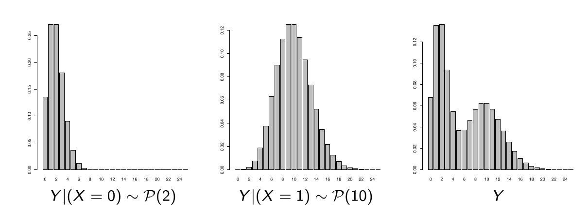
There is no notion of OR since we are not estimating a probability (or a probability ratio) but an expectation.
The equivalent notion here is the rate ratio (RR), \(\lambda(x)\) being seen as an average rate of occurrence of \(Y\).
For two characteristics \(x_1\) and \(x_2\), the rate ratio is simply:
\[RR(x_1, x_2) = \frac{\lambda_\beta(x_1)}{\lambda_\beta(x_2)} = \exp((x_1 - x_2)^T \beta)\]
Single Regressor Difference: If \(x_1\) and \(x_2\) differ only by regressor \(j\):
\(RR(x_1, x_2) = \exp((x_{1j} - x_{2j})\beta_j)\)
Binary regressor: (\(x_{1j} = 1\) and \(x_{2j} = 0\)): \(RR_j = e^{\beta_j}\).
\[P(Y = k|X = x) = e^{-\lambda_\beta(x)} \frac{\lambda_\beta(x)^k}{k!}\]
Thus the sample likelihood equals \(\prod_{i=1}^n e^{-\lambda_\beta(x_i)} \frac{\lambda_\beta(x_i)^{y_i}}{y_i!}\)
Since \(\lambda_\beta(x) = \exp(x^T \beta)\), the log-likelihood therefore equals
\[L = \sum_{i=1}^n \left[y_i x_i^T \beta - e^{x_i^T \beta} - \ln(y_i!)\right]\]
By setting the gradient with respect to \(\beta\) to zero, we find that the MLE \(\hat{\beta}\) must verify:
\[\sum_{i=1}^n y_i x_i = \sum_{i=1}^n \lambda_{\hat{\beta}}(x_i) x_i\]
This is a system with \(p\) unknowns (recall that \(x_i \in \mathbb R^p\)) that we solve numerically.
Under regularity conditions, when \(n \to \infty\):
\[\hat{\beta} \sim N(\beta, (X^T W_{\hat{\beta}} X)^{-1})\]
where \(W_{\hat{\beta}} = \text{diag}(\lambda_{\hat{\beta}}(x_1), \ldots, \lambda_{\hat{\beta}}(x_n))\).
We can therefore perform Wald significance tests.
The saturated model (one parameter per different observation) leads to
\[\hat{\lambda}(x) = \frac{y_x}{n_x}\]
The log-likelihood of the saturated model therefore equals:
\[L_{\text{sat}} = \sum_x \left[y_x \ln\left(\frac{y_x}{n_x}\right) - y_x\right] - \text{cste}\]
where \(\text{cste} = \sum_{i=1}^n \ln(y_i!)\).
Thus the deviance equals
\[D = 2(L_{\text{sat}} - L_{\text{mod}}) = 2\sum_x y_x \ln\left(\frac{y_x}{n_x \lambda_{\hat{\beta}}(x)}\right) - (y_x - n_x \lambda_{\hat{\beta}}(x))\]
If a constant is in the model (one coordinate of \(x\) equals \(1\)), we have from the likelihood equations \(\sum_x y_x = \sum_x n_x \lambda_{\hat{\beta}}(x)\) and then
\[D = 2\sum_x y_x \ln\left(\frac{y_x}{\hat{y}_x}\right)\]
where \(\hat{y}_x = n_x \lambda_{\hat{\beta}}(x)\) are the expected theoretical counts.
As in logistic regression, we can compare two nested models by a deviance test (or likelihood ratio test)
If model 2 has \(q\) fewer parameters compared to model 1, we have under \(H_0\): “the \(q\) coefficients in question are zero”:
\[D_2 - D_1 = 2(L_1 - L_2) \xrightarrow{L} \chi^2_q\]
Rejection region at level \(\alpha\):
\[\text{CR}_\alpha = \{D_2 - D_1 > \chi^2_q(1-\alpha)\}\]
The global significance test corresponds to the case where model 2 contains only the constant.
In this case \(D_2 = D_0\) and \(q = p - 1\).
Plot the predicted counts \(\hat{y}_x = n_x \lambda_{\hat{\beta}}(x)\) against the observed counts \(y_x\).
Warning
the predicted counts \(\hat{y}_x\) represent the expectation of the expected counts given \(x\).
It is therefore normal that the observed counts \(y_x\) are dispersed around the \(\hat{y}_x\)
It is appropriate to have sufficiently large “classes” \(x\) (\(n_x > 5\)) for the graph to be relevant.
Idea: empirical distribution of \(Y\) VS its predicted distribution.
The empirical distribution of \(Y\) is simply given by
\(p_k = \frac{1}{n}\sum_{i=1}^n \mathbf{1}_{y_i = k}, \quad k \in \mathbb{N}\)
While its predicted distribution is given by
\(\hat{p}_k = \frac{1}{n}\sum_{i=1}^n \hat{P}(Y = k|X = x_i), \quad k \in \mathbb{N}\)
where \(\hat{P}(Y = k|X = x_i)\) is the poisson distribution \(\mathcal P(\lambda_{\hat{\beta}}(x_i))\), i.e., \(\hat{P}(Y = k|X = x_i) = \frac{\lambda_{\hat{\beta}}(x_i)^k e^{-\lambda_{\hat{\beta}}(x_i)}}{k!}\)
Number of plant species recorded on a plot according to soil pH (Neutral, Acidic or Basic) and biomass collected.
| Species | pH | Biomass |
|---|---|---|
| 14 | low | 3.538 |
| 31 | mid | 0.740 |
| 36 | high | 7.242 |
| 20 | mid | 3.216 |
| … | … | … |
We want to model \(Y =\) “Species” as a function of pH and Biomass.
| Coefficient | Estimate | Std. Error | z value | Pr(> | z |
|---|---|---|---|---|---|
| (Intercept) | 3.84894 | 0.05281 | 72.885 | < 2e-16 | *** |
| pHlow | -1.13639 | 0.06720 | -16.910 | < 2e-16 | *** |
| pHmid | -0.44516 | 0.05486 | -8.114 | 4.88e-16 | *** |
| Biomass | -0.12756 | 0.01014 | -12.579 | < 2e-16 | *** |
Signif. codes: 0 ‘’ 0.001 ’’ 0.01 ’’ 0.05 ‘.’ 0.1 ’ ’ 1
(Dispersion parameter for poisson family taken to be 1)
Null deviance: 452.346
Residual deviance: 99.242
AIC: 526.43
Thus, the average number of species, given pH and Biomass, is estimated as
\(\lambda_{\hat{\beta}}(\text{pH}, \text{Biomass}) = \exp(3.85 - 1.14 \mathbf{1}_{\text{pH=low}} - 0.46 \mathbf{1}_{\text{pH=mid}} - 0.13 \text{Biomass})\)
Rate Ratio for low pH (acidic) compared to high pH (basic):
\(RR(\text{acidic}, \text{basic}) = \exp(-1.14) = 0.32\)
On average, there are therefore about 3 times fewer species in acidic soil than in basic soil.
We can try to introduce an interaction between pH and Biomass
| Coefficient | Estimate | Std. Error | z value | Pr(> | z |
|---|---|---|---|---|---|
| (Intercept) | 3.76812 | 0.06153 | 61.240 | < 2e-16 | *** |
| pHlow | -0.81557 | 0.10284 | -7.931 | 2.18e-15 | *** |
| pHmid | -0.33146 | 0.09217 | -3.596 | 0.000323 | *** |
| Biomass | -0.10713 | 0.01249 | -8.577 | < 2e-16 | *** |
| pHlow:Biomass | -0.15503 | 0.04003 | -3.873 | 0.000108 | *** |
| pHmid:Biomass | -0.03189 | 0.02308 | -1.382 | 0.166954 |
Signif. codes: 0 ‘’ 0.001 ’’ 0.01 ’’ 0.05 ‘.’ 0.1 ’ ’ 1
(Dispersion parameter for poisson family taken to be 1)
Null deviance: 452.346
Residual deviance: 83.201
AIC: 514.39
The model with interaction seems preferable (via AIC and deviance test).
The average number of species, given pH and Biomass, is this time:
\[\begin{aligned} \lambda_{\hat{\beta}}(\text{pH}, \text{Bm}) &= \exp(3.77 - 0.82 \mathbf{1}_{\text{pH=low}} - 0.33 \mathbf{1}_{\text{pH=mid}}) \\ &- 0.11\text{Bm} - 0.16\text{Bm}\mathbf{1}_{\text{pH=low}} - 0.032\text{Bm}\mathbf{1}_{\text{pH=mid}} \end{aligned}\]
The Rate Ratio for low pH (acidic) compared to high pH (basic) depends on Biomass and equals:
\(RR(\text{acidic}, \text{basic}) = \exp(-0.82 - 0.16\text{Bm})\)
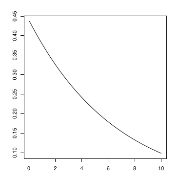
Predicted mean counts \(\hat{y}_i = \lambda_{\hat{\beta}}(\text{pH}_i, \text{Biomass}_i)\) as a function of observed counts \(y_i\).
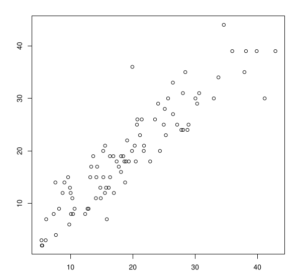
Lines: predicted mean counts by pH as a function of biomass
Points: observed counts by pH as a function of biomass
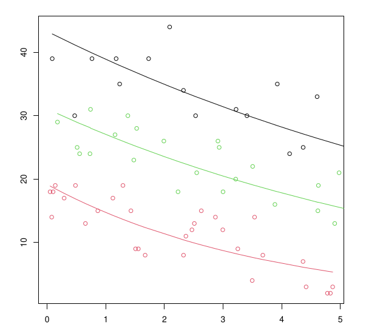
Black: pH=basic; Green: pH=neutral; Red: pH=acidic
Histogram: empirical distribution
Points: predicted distribution
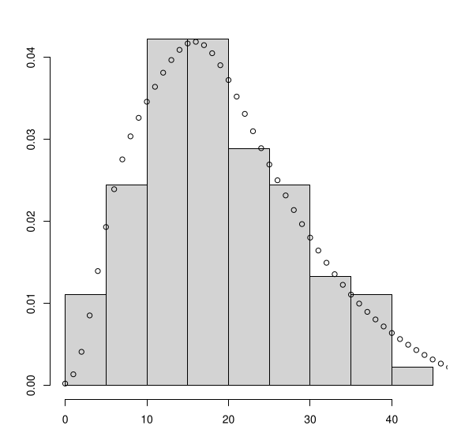
When we model \(Y|(X = x) \sim \mathcal P(\lambda(x))\), we have
\[\E(Y|X = x) = \lambda(x)\]
but also
\[\Var(Y|X = x) = \lambda(x)\]
This constraint is a limitation of the Poisson model.
Some data are overdispersed, in the sense that
\[\Var(Y|X = x) > \E(Y|X = x)\]
More rarely, we can find underdispersed data.
In case of overdispersion, the estimated variance of estimators is underestimated.
By assuming that \(\Var(Y|X = x) = \phi \E(Y|X = x)\) where \(\phi > 0\), we can estimate \(\phi\) by
\[\hat{\phi} = \frac{1}{n-p} \sum_{i=1}^n \frac{(y_i - \hat{y}_i)^2}{\hat{y}_i}\]
and test if \(\phi = 1\) or not (if \(\phi = 1\), \(\hat{\phi} \sim N(1, 1/n)\) when \(n \to \infty\)).
We can fit a negative binomial model (cf the following), and test if it is better than the Poisson model.
Estimate \(E(Y|X = x) = \lambda_\beta(x)\) with \(\lambda_\beta(x) = \exp(x^T \beta)\) in the same way as with a Poisson model (same likelihood).
Estimate \(\phi\) as in the previous slide.
Estimate the variance of \(\hat{\beta}\) taking into account \(\hat{\phi}\).
The estimation procedure does not rely on the “true” likelihood (because of \(\phi\)): we therefore do not have access to \(L_{\text{mod}}\).
| Coefficient | Estimate | Std. Error | t value | Pr(> | t |
|---|---|---|---|---|---|
| (Intercept) | 3.76812 | 0.06144 | 61.332 | < 2e-16 | *** |
| pHlow | -0.81557 | 0.10268 | -7.943 | 7.90e-12 | *** |
| pHmid | -0.33146 | 0.09203 | -3.602 | 0.000534 | *** |
| Biomass | -0.10713 | 0.01247 | -8.590 | 3.97e-13 | *** |
| pHlow:Biomass | -0.15503 | 0.03997 | -3.878 | 0.000208 | *** |
| pHmid:Biomass | -0.03189 | 0.02304 | -1.384 | 0.169985 |
Signif. codes: 0 ‘’ 0.001 ’’ 0.01 ’’ 0.05 ‘.’ 0.1 ’ ’ 1
(Dispersion parameter for quasipoisson family taken to be 0.9970074)
Null deviance: 452.346 on 89 degrees of freedom
Residual deviance: 83.201 on 84 degrees of freedom
AIC: NA
\(\hat{\phi} = 0.997 \approx 1\) therefore there was no overdispersion issue
The Residual deviance is incorrect: it’s that of the Poisson model.
Alternative to Poisson: Negative Binomial (NB), which depends on 2 parameters:
If \(Y \sim NB(\lambda, \theta)\), then for all \(k \in \mathbb{N}\),
\[P(Y = k) = \frac{\Gamma(k + \theta)}{\Gamma(k + 1)\Gamma(\theta)} \left(\frac{\lambda}{\lambda + \theta}\right)^k \left(\frac{\theta}{\lambda + \theta}\right)^\theta\]
The expectation of \(NB(\lambda, \theta)\) equals \(\lambda\).
The variance of \(NB(\lambda, \theta)\) equals \(\lambda + \lambda^2/\theta\).
This distribution can therefore model overdispersion (but not underdispersion).
If \(\theta \to +\infty\), \(NB(\lambda, \theta) \approx P(\lambda)\).
The Poisson distribution is therefore a special case of the NB distribution.
The negative binomial GLM model assumes that
\[Y|(X = x) \sim NB(\lambda(x), \theta)\]
where as usual \(\lambda(x) = \exp(x^T \beta)\).
The estimation of \(\beta\) and \(\theta\) is done by maximum likelihood
All usual inference tools are available:
If \(\hat{\theta}\) is large, this is equivalent to the Poisson model.
We can test the interest of the NB model compared to the Poisson model by inspecting \(\hat{\theta}\), or by comparing their AIC and BIC criteria.
| Coefficient | Estimate | Std. Error | z value | Pr(> | z |
|---|---|---|---|---|---|
| (Intercept) | 3.76813 | 0.06154 | 61.235 | < 2e-16 | *** |
| pHlow | -0.81557 | 0.10284 | -7.930 | 2.19e-15 | *** |
| pHmid | -0.33146 | 0.09217 | -3.596 | 0.000323 | *** |
| Biomass | -0.10713 | 0.01249 | -8.577 | < 2e-16 | *** |
| pHlow:Biomass | -0.15503 | 0.04003 | -3.873 | 0.000108 | *** |
| pHmid:Biomass | -0.03189 | 0.02308 | -1.382 | 0.166978 |
Signif. codes: 0 ‘’ 0.001 ’’ 0.01 ’’ 0.05 ‘.’ 0.1 ’ ’ 1
(Dispersion parameter for Negative Binomial(212058.3) family taken to be 1)
Null deviance: 452.307 on 89 degrees of freedom
Residual deviance: 83.194 on 84 degrees of freedom
AIC: 516.39
\(\hat{\theta} = 212058.3\) therefore the model is equivalent to the Poisson model.
This is confirmed via the AIC.
When \(Y\) is a count variable, it is not uncommon for \(Y = 0\) to appear very often in the sample.
Example 1: \(Y\): amount of rain (in mm) that fell each day.
Example 2: \(Y\): amount of alcohol (in glasses) consumed each week.
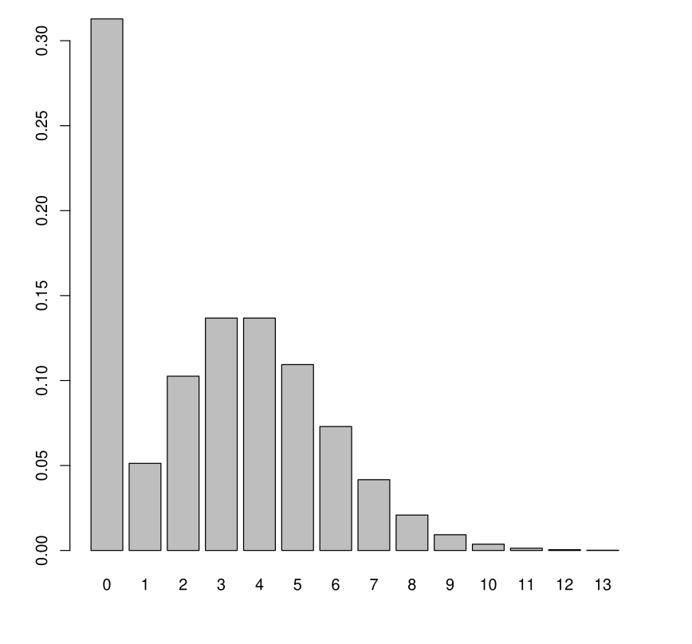
A Poisson or Negative Binomial model is not adapted.
Generally two “populations” that explain this phenomenon:
We can consider two modelings in this spirit:
We present below the zero-inflated model.
The ZIP (Zero-Inflated Poisson) model assumes that
\[Y|(X = x) = \begin{cases} 0 & \text{with probability } q(x) \\ P(\lambda(x)) & \text{with probability } 1 - q(x) \end{cases}\]
where
\[\lambda(x) = \exp(x^T \beta) \quad \text{and} \quad q(x) = \text{logit}^{-1}(x^T \gamma)\]
Thus two populations mix:
With this model, we therefore have
\(P(Y = 0|X = x) = q_\gamma(x) + (1 - q_\gamma(x))e^{-\lambda_\beta(x)}\)
\(P(Y = k|X = x) = (1 - q_\gamma(x))e^{-\lambda_\beta(x)} \frac{\lambda_\beta(x)^k}{k!}\)
where \(\lambda_\beta(x) = \exp(x^T \beta)\) and \(q_\gamma(x) = \text{logit}^{-1}(x^T \gamma)\).
We deduce
\(E(Y|X = x) = (1 - q_\gamma(x))\lambda_\beta(x)\)
For inference:
Under R: zeroinfl function from the pscl package.
Similarly, the ZINB (Zero-Inflated Negative Binomial) model is
\[Y|(X = x) = \begin{cases} 0 & \text{with probability } q(x) \\ NB(\lambda(x), \theta) & \text{with probability } 1 - q(x) \end{cases}\]
where \(\theta > 0\) and
\(\lambda(x) = \exp(x^T \beta) \quad \text{and} \quad q(x) = \text{logit}^{-1}(x^T \gamma)\)
Under R: zeroinfl function with the option dist="negbin".
Number of male satellites on female horseshoe crabs.
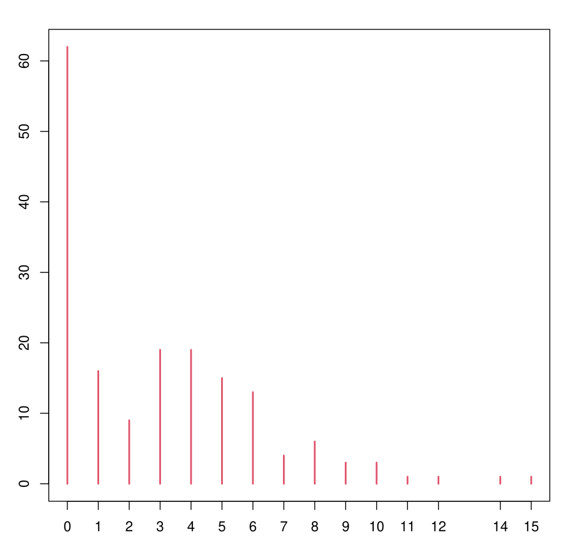
We want to model the number of satellites (satell) as a function of the weight of the horseshoe crab (weight) and its color (color, from 1 to 4, ≈ age).
| Coefficient | Estimate | Std. Error | z value | Pr(> | z |
|---|---|---|---|---|---|
| (Intercept) | 0.08855 | 0.25443 | 0.348 | 0.72783 | |
| weight | 0.54588 | 0.06749 | 8.088 | 6.05e-16 | *** |
| color | -0.17282 | 0.06155 | -2.808 | 0.00499 | ** |
Signif. codes: 0 ‘’ 0.001 ’’ 0.01 ’’ 0.05 ‘.’ 0.1 ’ ’ 1
(Dispersion parameter for poisson family taken to be 1)
Null deviance: 632.79 on 172 degrees of freedom
Residual deviance: 552.79 on 170 degrees of freedom
AIC: 914.09
The model is significant but the fit is poor (the deviance is very high)
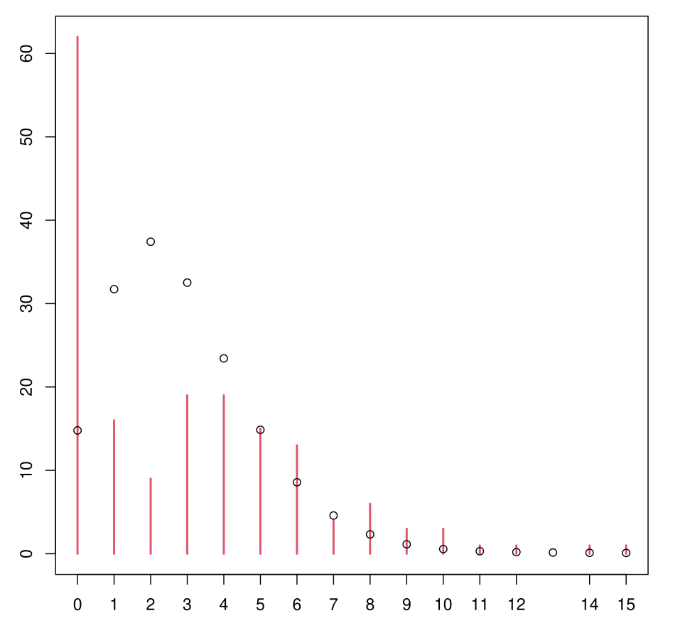
| Coefficient | Estimate | Std. Error | z value | Pr(> | z |
|---|---|---|---|---|---|
| (Intercept) | -0.3220 | 0.5540 | -0.581 | 0.561 | |
| weight | 0.7072 | 0.1612 | 4.387 | 1.15e-05 | *** |
| color | -0.1734 | 0.1199 | -1.445 | 0.148 |
Signif. codes: 0 ‘’ 0.001 ’’ 0.01 ’’ 0.05 ‘.’ 0.1 ’ ’ 1
(Dispersion parameter for Negative Binomial(0.9555) family taken to be 1)
Null deviance: 219.50 on 172 degrees of freedom
Residual deviance: 196.64 on 170 degrees of freedom
AIC: 754.45
It’s better… (by the way: color doesn’t seem significant)
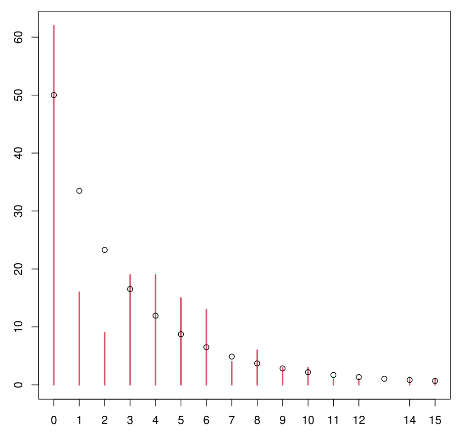
Still not very satisfactory.
Count model coefficients (poisson with log link):
| Coefficient | Estimate | Std. Error | z value | Pr(> | z |
|---|---|---|---|---|---|
| (Intercept) | 1.00152 | 0.20793 | 4.817 | 1.46e-06 | *** |
| weight | 0.19020 | 0.07572 | 2.512 | 0.012 | * |
Zero-inflation model coefficients (binomial with logit link):
| Coefficient | Estimate | Std. Error | z value | Pr(> | z |
|---|---|---|---|---|---|
| (Intercept) | 1.9621 | 1.1448 | 1.714 | 0.0866 | . |
| weight | -1.6630 | 0.3943 | -4.218 | 2.47e-05 | *** |
| color | 0.5329 | 0.2305 | 2.312 | 0.0208 | * |
Signif. codes: 0 ‘’ 0.001 ’’ 0.01 ’’ 0.05 ‘.’ 0.1 ’ ’ 1
Number of iterations in BFGS optimization: 9
Log-likelihood: -360.8 on 5 Df
We see the estimation result explaining the mixture of the two “populations” forming the model.
First population: Poisson log-linear model with expectation \(\lambda\) where \(\lambda(\text{weight}) = \exp(1 + 0.19 \times \text{weight})\)
Second population is \(0\). The probability \(q\) of belonging to the second one is
\(q(\text{wgt}, \text{col}) = \text{logit}^{-1}(1.96 - 1.66 \times \text{wgt} + 0.53 \times \text{col})\)
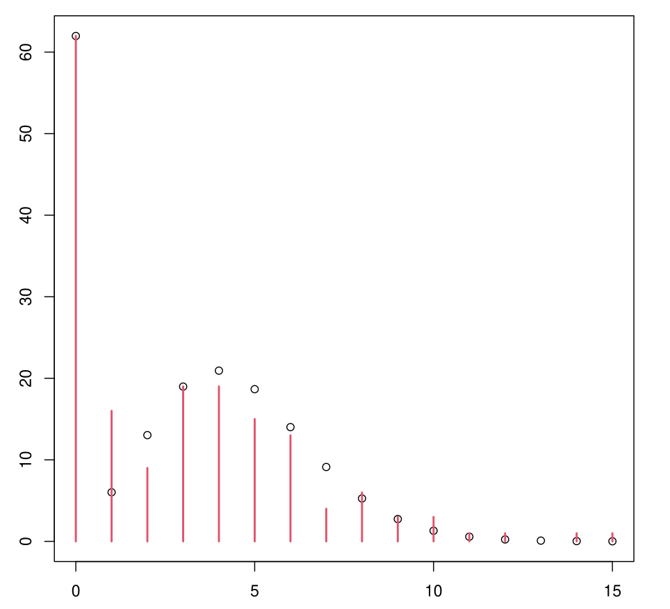
Much more convincing.
Count model coefficients (negbin with log link):
| Coefficient | Estimate | Std. Error | z value | Pr(> | z |
|---|---|---|---|---|---|
| (Intercept) | 0.8961 | 0.3070 | 2.919 | 0.00351 | ** |
| weight | 0.2169 | 0.1125 | 1.928 | 0.05383 | . |
| Log(theta) | 1.5802 | 0.3574 | 4.422 | 9.79e-06 | *** |
Zero-inflation model coefficients (binomial with logit link):
| Coefficient | Estimate | Std. Error | z value | Pr(> | z |
|---|---|---|---|---|---|
| (Intercept) | 1.8663 | 1.2415 | 1.503 | 0.133 | |
| weight | -1.7531 | 0.4429 | -3.958 | 7.55e-05 | *** |
| color | 0.5985 | 0.2572 | 2.326 | 0.020 | * |
Signif. codes: 0 ‘’ 0.001 ’’ 0.01 ’’ 0.05 ‘.’ 0.1 ’ ’ 1
Theta = 4.8558
Number of iterations in BFGS optimization: 11
Log-likelihood: -349.9 on 6 Df
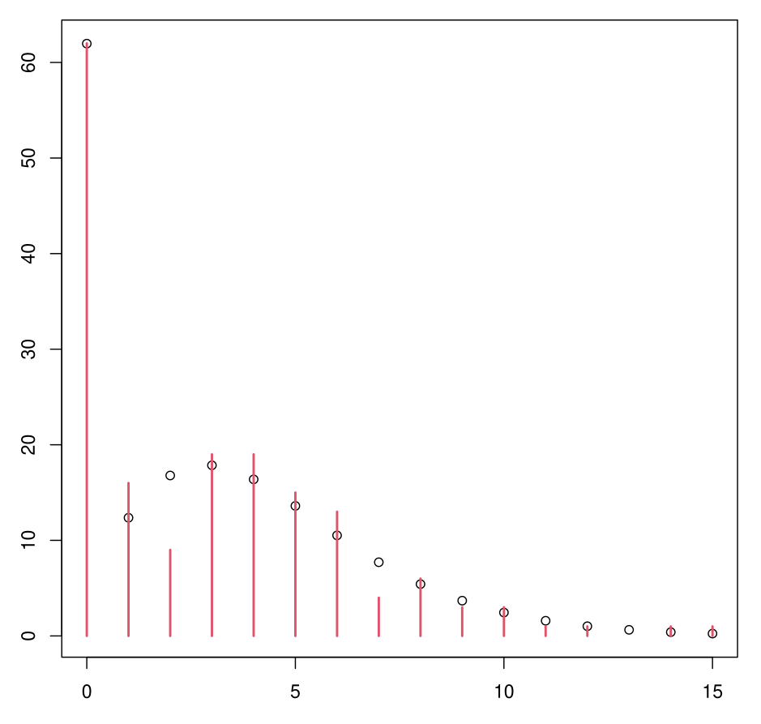
The output is read in the same way as for the ZIP model
There is the parameter \(\theta\) in addition, from the NB distribution
\(\theta\) is not “infinite”: the model therefore does not reduce to the ZIP model.
A deviance test shows that ZINB is preferable to ZIP
This is also confirmed by the AIC and BIC criteria.
A portion of horseshoe crabs (the smallest and oldest) have no male satellites.
The probability of belonging to this population is estimated at
\(q(\text{wht}, \text{col}) = \text{logit}^{-1}(1.87 - 1.75 \times \text{wht} + 0.60 \times \text{col})\)
For the other portion of horseshoe crabs, they have on average more satellites the larger they are. This average is estimated at
\(\lambda(\text{wht}) = \exp(0.90 + 0.22 \times \text{wht})\)
Distribution cna be modeled as \(NB(\lambda(\text{wht}), \theta)\) where \(\theta = 4.86\).